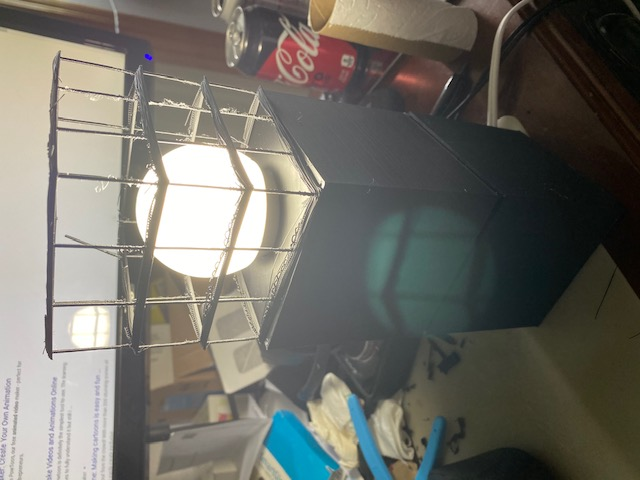
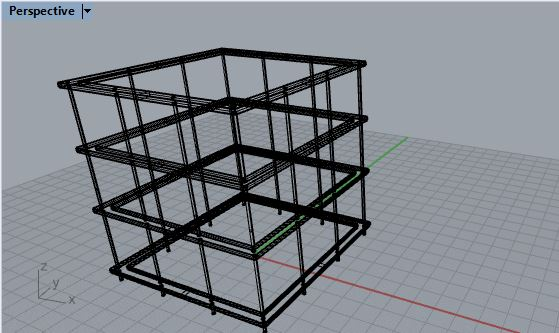
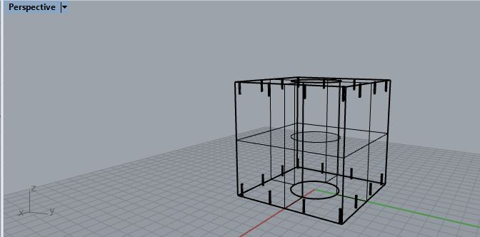
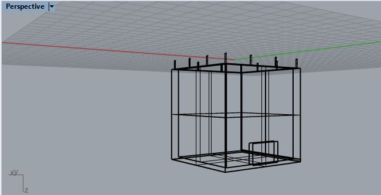

Assignment 5 - Lamps part 2 and Molding and casting
Assignment 5 had us Finish our Lamps and start on our Casting Molds
Finishing the Lamp
From Last time I just had a sketch of my design for my lamp.
The first thing I did was create the Center cube in rhino. I used grasshopper to make sure the dimensions of the cube wit the circular center hole were per my design
I then added tube extrusions for the peg holes. Which i then proceeded to use to cut out of the center cube using the -booleansplit- command
I then designed the bottom cube, keeping the same model and renaming it. I deleted the Cube, but kept the tube extrusions to which i -booleanunion- to a hollowed cube
After this I created the top cube by making the same tube extrusions, but 90mm long to keep with the rest of the design.
Then added the Square frames along the side.
Printing the Lamps
This was my first time printing such large objects and I was suprised by how long it took.
Tada, The finished Lamp!

The Mold
For this part of the assignment we had to create a mold for molds
The Design i decided to try to go for was an mold for a mold for ice shot glasses.
For the shot glasses I measured the dimensions of a shot glass, and created the geometry in rhino.
I then split the glass in two for each side of the mold which i think i put on the right side of the mold
The idea is that I had to create kind of like a relief of the item so that it can properly form the mold, which then is used to create the ice shot glasses
I think i still need to add keys and a hole for which water will be poured.
I have yet to print them yet, because the lamp took so much longer than expected. So tune in next week to see how it turned out!
Below are all the pics for assignment 2!Heres are pics of the Lamp



Mold Designs